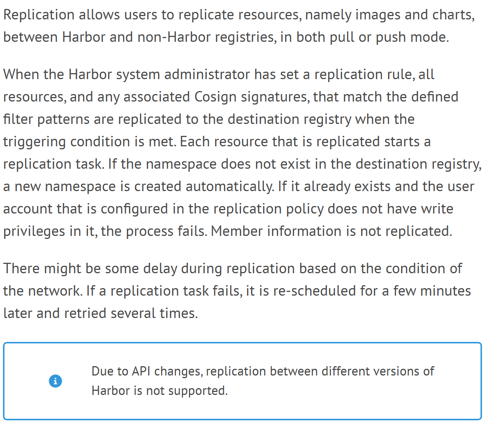
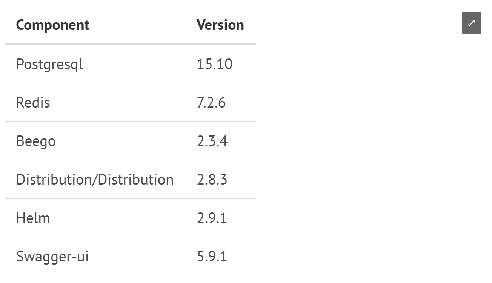
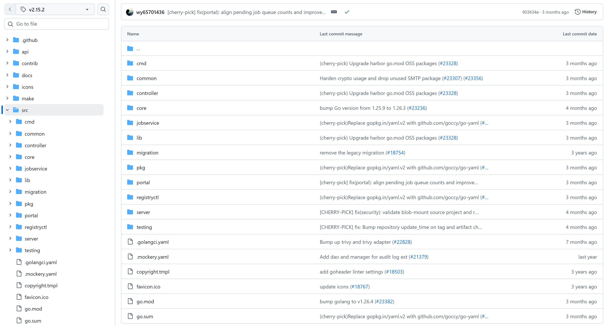
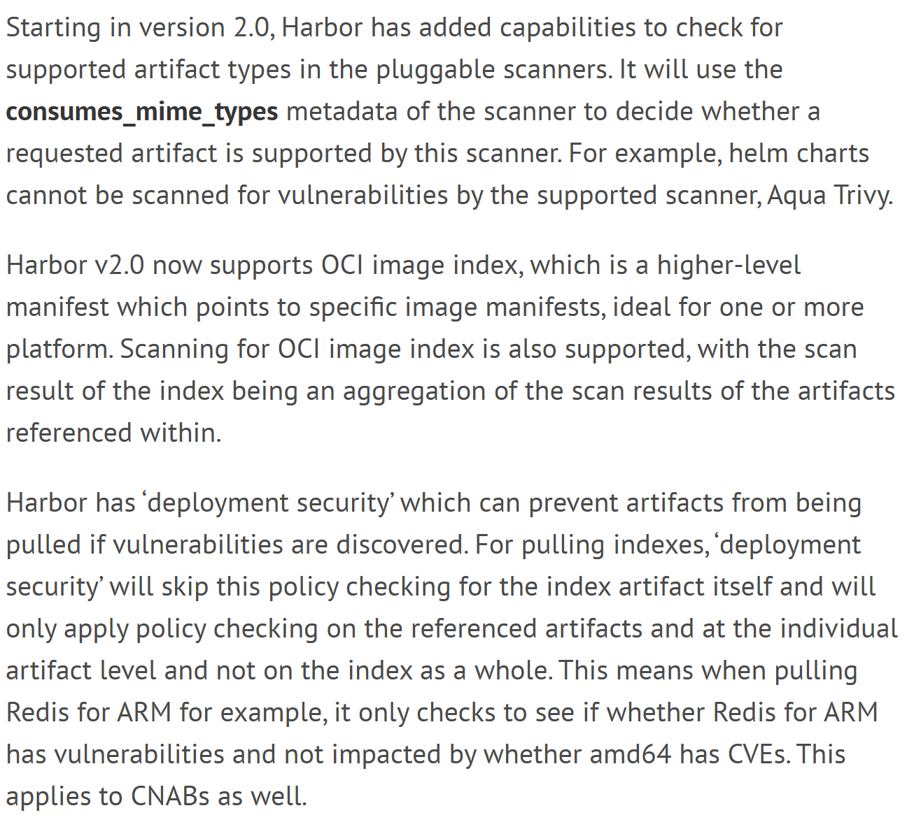

OSS PROJECT INTRO · HARBOR 系列第 3 期：核心概念与整体架构
上一期我们用一条命令把 Harbor 跑了起来，还推进了第一张镜像——但镜像落库之后发生了什么，一直没拆开看。本期你带走一张概念地图：从一次 docker push 出发，看 project / repository / artifact 这些术语怎么组织，复制、扫描、签名三条链路怎么协作，外加一张自绘整体架构图和 tag v2.15.2 的源码顶层模块地图。两个钩子问题贯穿全程：push 回显成功之后发生了什么？扫描报告怎么挡住一次拉取？全部概念逐条核对官方文档（2.15）与 v2.15.2 源码树。
Harbor 的术语体系是三层套娃，每层各管一件事。官方文档《Create Projects》的开篇原话："A project in Harbor contains all repositories of an application. Images cannot be pushed to Harbor before a project is created."——项目包含一个应用的全部仓库，不建项目连推都推不进来。权限（基于角色的访问控制，开发者/维护者/项目管理员分角色）也以项目为边界（goharbor.io，2026-09 核对）。
第三层的"制品"是理解 Harbor 的钥匙：Harbor 2.0 起按 OCI（开放容器标准）规范统一承载内容，镜像和 Helm Chart 在它眼里是同一种东西——artifact，所以扫描、签名、保留、复制这些策略能一套管到底。把一条镜像地址拆开，三层结构一目了然（地址规则对照官方文档《Pulling and Pushing Images》，2026-09 核对）：
# Docker 命名规则：仓库地址/项目/仓库:标签
harbor.demo.com/demo/app:v1.2
# 同一制品还有个不变的名字：按内容算出的摘要（digest）
harbor.demo.com/demo/app@sha256:9c0b0a…标签是给人看的别名，可以改可以删；摘要按内容算出，改一个字节就变——生产流水线认摘要不认标签，防的就是同名覆盖。推镜像的"人"也分两种：人用真人账号，流水线用机器人账号（robot account）——名字带 robot$ 前缀，密码是只显示一次的 secret，默认 30 天过期，权限按项目细粒度勾选（官方文档《System Robot Accounts》，2026-09 核对）。审计日志里人机分明，密钥泄露影响面也只有单个项目。
仓库管久了还会胖，项目配置里还有四件治理工具：
| 概念 | 管什么 | 一句话规则 |
|---|---|---|
| 标签保留策略（tag retention） | 旧镜像堆积 | 按规则只留最近 N 个标签，其余自动清 |
| 标签不可变规则（immutability） | 同名覆盖 | 锁定的标签禁止再推，防"悄悄换货" |
| 项目配额（quota） | 存储失控 | 给项目设存储上限，默认不限量；官方文档细节：清单后到，超限不一定是推的那一下被拒 |
| 垃圾回收（GC） | 删除后的死重 | 清掉无引用的层，空间才真正回来 |
第二期推完镜像，你看到的是一句回显加一个摘要值。但那只是同步路径的终点；真正的重头戏在异步任务链上——扫描、复制这些"增值动作"全都不是推送当场跑完的，而是登记成任务排队执行。两条线画在一张图上：
异步链四个环节：事件登记——推送、扫描、复制都先写成任务记录，不是当场跑完的函数调用，接口才能秒回；jobservice 统一派发——专用任务引擎取任务、执行、回写状态，与接口进程互不拖累；失败自动重试——复制任务失败隔几分钟再试（官方文档《Configuring Replication》明说的行为）；面板可查——Job Service Dashboard 看队列与状态。所以"推送快"不等于"处理完"，扫描报告要等任务跑完才出。这套"接口秒回 + 任务落账 + 引擎派发"的模式，你自己设计系统时也用得上。

官方文档《Configuring Replication》：Replication allows users to replicate resources, namely images and charts, between Harbor and non-Harbor registries, in both pull or push mode——每个匹配资源各起一个复制任务，失败隔几分钟重试；不同版本 Harbor 之间不支持复制（2026-09-19 截图，正文主栏）。复制解决的是"一份镜像，多个机房/多云要用"的分发问题。官方口径：Harbor 与非 Harbor 仓库之间都能复制，拉取（pull）与推送（push）两种模式。一条复制规则三要素——过滤器 + 目标 + 触发方式：
每个匹配的资源各起一个复制任务，目标端命名空间不存在会自动建，任务失败隔几分钟自动重试——复制本质上是第 2 节那条异步任务链上的一种任务。做灾备还有一句要划重点：不同版本的 Harbor 之间不支持复制，主备两端版本要对齐。
读三条线：入口线，所有流量先过 nginx 反向代理；主链，core 管接口、认证、策略，制品本体存在 registry 里——registry 就是上游 Distribution（组件表版本 2.8.3），Harbor 没有重写存储协议，这是"协议兼容零迁移成本"的根基；异步链，core 派任务，jobservice 驱动 trivy-adapter 完成扫描，核心不亲自扫。底下 PostgreSQL 与 Redis 托底，portal 出 Web 控制台，另配日志与 exporter。官方安装模板（v2.15.2 的 docker-compose.yml.jinja）里这 11 个容器一个不差：nginx、portal、core、jobservice、registry、registryctl、trivy-adapter、db、redis、log、exporter——注意里面没有 ChartMuseum，原因见第 6 节。

官方文档《Installation and Configuration》的 Harbor Components 组件表：Postgresql 15.10 · Redis 7.2.6 · Beego 2.3.4（core 的 Web 框架）· Distribution/Distribution 2.8.3（registry 本体）· Helm 2.9.1 · Swagger-ui 5.9.1（2026-09-19 截图）。
github.com/goharbor/harbor/tree/v2.15.2/src：core、jobservice、registryctl、server、pkg 等目录一屏可见；左侧文件树定位在 src，标签选择器 v2.15.2（UTC 时区，2026-09-19 截图）。读码前先锁定这个标签，主干演进很快。架构要落到代码才踏实。src 顶层每个目录一句话（目录名逐个核对于 tag v2.15.2 仓库树，2026-09-19）：
harbor @ v2.15.2 · src/ 顶层
├─ core/ 核心服务主程序：REST API、认证鉴权、事件
├─ server/ HTTP 服务装配：v2.0 接口处理器与中间件
├─ jobservice/ 异步任务引擎：复制、扫描、保留、GC 队列
├─ registryctl/ registry 管控端：健康检查与垃圾回收
├─ pkg/ 业务逻辑层：47 个子包（项目/制品/扫描/策略）
├─ controller/ 控制器层：接口与业务之间的流程编排
├─ portal/ Web 控制台前端（Angular）
├─ lib/ 通用库：配置、日志、工具
├─ cmd/ 辅助入口：exporter、swagger、迁移工具
└─ common/ migration/ testing/ 公共配置 · 迁移 · 测试脚手架对照上一节的架构图，每个框都能找到自己的目录。一个反直觉的点值得单独说：registry 本体不在源码树里——它是上游 Distribution 的现成镜像，Harbor 用 registryctl 这个管控端指挥它做健康检查和垃圾回收。存储协议是公开标准就不必重造，把研发力量花在策略与管理面上，这个"复用而不重造"的决策很值得学。第 4 期读码入口从 core/ 与 jobservice/ 进。
钩子二的答案：扫描结果通过"部署安全"策略挡住拉取。项目配置里一个开关（官方 API 字段 prevent_vul）+ 一档阈值（severity，合法值 none/low/medium/high/critical），规则一句话：达到或超过阈值的漏洞，镜像一律拒拉——swagger 原文 "If the vulnerability is high than severity defined here, the images can't be pulled."。扫描时机有三种：推入自动扫（auto_scan）、按周期定时扫、手动扫。扫描器是适配器机制：内置 Trivy（--with-trivy 启用），也能接企业自有的扫描引擎，换引擎不动架构（官方文档《Vulnerability Scanning》《Deployment Security》，2026-09 核对）。

官方文档《Deployment Security》：Harbor has 'deployment security' which can prevent artifacts from being pulled if vulnerabilities are discovered——按制品逐个校验，多架构镜像只看所拉平台（2026-09-19 截图，正文主栏）。四行项目配置就是两条安全防线的真身（字段与描述逐字取自 v2.15.2 的 api/v2.0/swagger.yaml，2026-09-19 核对）：
# 项目元数据（api/v2.0/swagger.yaml @ v2.15.2 原文字段）
prevent_vul: "true" # 启用部署安全拦截
severity: "high" # 阈值：high 及以上拒拉
auto_scan: "true" # 推入自动触发扫描
enable_content_trust: "true" # 未签名制品拒绝拉取签名这条线也在换代，值得单独讲。Harbor 2.5 集成 Cosign，签名以 accessory（附属制品）形式挂在原制品名下，保留与复制策略连它一起管；2.8 起 ChartMuseum 整体移除（官方发布说明原文："Starting with version v2.8.0, Harbor no longer includes ChartMuseum in either the user interface or the backend."），Chart 全面走 OCI 制品；2.9 起 Notary 移除、Notation 加入，与 Cosign 组成签名双引擎。项目开启内容信任（enable_content_trust）后，未签名的制品直接拒绝拉取（官方文档《Sign Artifacts with Cosign or Notation》，2026-09 核对）。
两条拦截链正面看：扫描拦截防"带病"——内容有没有毒，解法是修漏洞（升级基础镜像或调阈值）；签名拦截防"假货"——来路是不是你，解法是流水线签名一体化。组件会退役，架构模式不变：适配器 + 策略，换引擎不换骨架。
分界线划在"协议"与"策略"之间。Docker Registry API 是公开标准，registry 只要老老实实实现存取语义就行——这部分 Harbor 一行不写，直接拿 Distribution 的镜像来用，只在旁边配一个 registryctl 管控端做健康检查和垃圾回收。这样做有三重收益：其一，兼容性白拿——Docker 客户端、K8s kubelet、各家 CI 对接的是标准协议，registry 换成任何标准实现都不破坏；其二，维护成本外包给上游社区——存储引擎的 bug、性能优化由 Distribution 项目扛，Harbor 升级只需跟版本号；其三，差异化聚焦——Harbor 的竞争力在扫描、签名、复制、RBAC、审计这些"协议管不了但企业必须管"的策略层，全部长在 core 与 jobservice 里，与存储解耦。反例是重写存储协议：短期看似自主可控，长期每一分兼容性都要自己还。判别式一句话：标准化的部分换件不造件，差异化的部分深耕成护城河。你自己设计中间件平台时，先问"这一层有没有事实标准"，有就站在标准肩膀上。
两道闸回答的是两个不同的问题。扫描拦截回答"这个镜像里有没有已知的问题"——它校验的是内容：Trivy 静态分析出 CVE 报告，达到 severity 阈值就拒拉。但它有个盲区：它只能认得"已知漏洞"，且不关心镜像从哪来、中途被谁换过。签名拦截回答"这个镜像是不是我方构建、未被篡改"——它校验的是来路：Cosign/Notation 签名绑定构建身份与内容摘要，内容信任开启后无签名拒拉。只留扫描闸：攻击者投毒一个"无已知漏洞"的恶意镜像照样能进生产——内容干净但来路不明；只留签名闸：签名的镜像里可能带着高危 CVE——来路正统但带病上岗。供应链安全的两个正交维度（完整性与安全性）必须分别设防。再看工程实现：两道闸共用同一个挂载点（拉取时的策略检查），开关与阈值都收在项目配置四行字段里，边际成本几乎为零——这也是"策略统一收口"的好处：防线可以叠加，检查点不必重复建设。
1. 一次 docker push 回显成功之后，扫描和复制是怎么执行的？
2. 项目开启 prevent_vul 并把 severity 设为 high 之后，会发生什么？
带走这五句话：
下期预告：第 4 期《实战与源码导读》——把复制、扫描、签名这些能力串成一次端到端实战：建项目、配机器人账号、开扫描拦截、建一条复制规则，再轻读一眼 core/ 与 jobservice/ 的源码入口。
Primary source：Harbor 官方文档 · v2.15.0——本期概念均出自该文档：复制见 Configuring Replication，漏洞扫描与拦截见 Deployment Security，项目见 Create Projects，签名见 Sign Artifacts with Cosign or Notation；源码目录核对见 github.com/goharbor/harbor @ v2.15.2/src，组件版本见官方文档 Harbor Components 表（Distribution 2.8.3 · PostgreSQL 15.10 · Redis 7.2.6）。